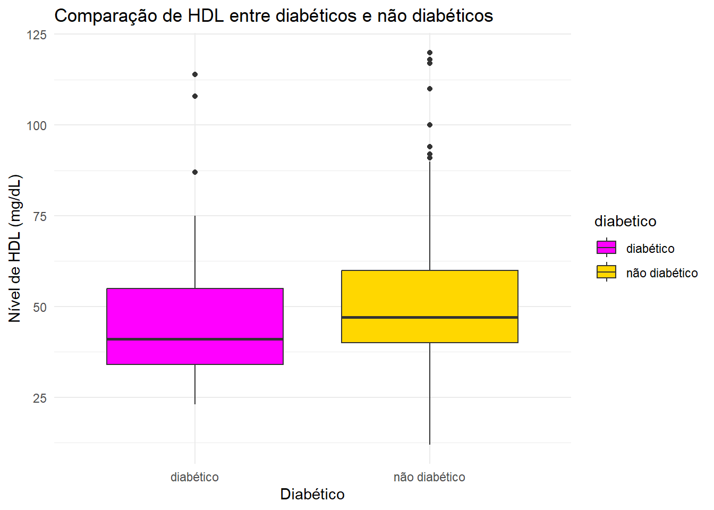

HDL em diabéticos e não diabéticos
Introdução
O HDL (lipoproteína de alta densidade) é conhecido por sua relação inversa com doenças cardiovasculares devido às suas funções antiaterogênicas, como o transporte reverso de colesterol, atividades antioxidantes e anti-inflamatórias. No entanto, em estados patológicos como resposta inflamatória aguda, obesidade e doenças inflamatórias crônicas, o HDL pode perder essas funções. Essas condições, incluindo diabetes mellitus, aumentam o risco de doenças cardiovasculares. No diabetes mellitus, o HDL passa por alterações estruturais que comprometem suas funções protetoras, contribuindo para maior risco cardiovascular e disfunção do HDL1. Assim, esse trabalho busca compreender se há diferença significativa nos níveis de HDL em pacientes diabéticos em comparação com os não diabéticos.
Materiais e Métodos
Os dados utilizados neste estudo foram obtidos de um banco de dados pré-existente, que contém informações sobre pacientes diabéticos e não diabéticos. A amostra de pacientes foi dividida em dois grupos: um grupo de pacientes diabéticos e um grupo de controle composto por pacientes não diabéticos. A definição de diabetes foi baseada em hemoglobina glicada > 6.5. A variável de interesse foi o nível de HDL, que foi extraído diretamente do banco de dados. Os dados serão analisados usando o software RStudio2 e a linguagem R3. Os gráficos serão plotados com o pacote ggplot24. Para avaliar a normalidade dos dados, será realizado o teste de Shapiro-Wilk. Caso os dados sigam uma distribuição normal, será realizado o teste t de Student para comparação entre os grupos diabéticos e não diabéticos. Caso os dados não sigam uma distribuição normal, a comparação entre os grupos será realizada utilizando o teste de Mann-Whitney. O nível de significância adotado para todas as análises será de 5% (p < 0,05).
Resultados
Os níveis de HDL foram comparados entre indivíduos diabéticos e não diabéticos utilizando o teste de Mann-Whitney. Houve uma diferença estatisticamente significativa nos níveis de HDL entre os grupos (W = 7897.5, p = 0.0015). A mediana dos níveis de HDL foi de 41 em diabéticos e 47 em não diabéticos.
Resultados dos Testes Estatísticos
Para os diabéticos, o teste de Shapiro-Wilk apresentou W = 0.8649, p = 4.169e-06.
Para os não diabéticos, o teste de Shapiro-Wilk apresentou W = 0.9217, p = 5.574e-12.
O teste de Wilcoxon apresentou W = 7897.5, p = 0.001459, indicando uma diferença significativa entre os grupos.
Discussão
Os resultados indicaram que os indivíduos diabéticos apresentaram níveis significativamente mais baixos de HDL em comparação aos não diabéticos, corroborando a literatura que associa o diabetes a menores níveis de HDL. A redução dos níveis de HDL é um dos aspectos mais comuns e preocupantes observados na síndrome metabólica. A resistência à insulina, a obesidade e os altos níveis de triglicerídeos desempenham papéis centrais na associação com baixos níveis de HDL5. Somada à disfunção estrutural e funcional, que compromete suas propriedades antiaterogênicas, como o transporte reverso de colesterol e suas atividades antioxidantes e anti-inflamatórias, verifica-se um maior risco cardiovascular nessa população.
Além disso, o boxplot reflete claramente essa diferença, com valores medianos mais baixos no grupo diabético. Esses achados reforçam a necessidade de uma abordagem clínica que vá além do controle glicêmico, considerando estratégias para preservar ou melhorar os níveis e a funcionalidade do HDL em pacientes diabéticos. Por fim, estudos futuros são necessários para investigar intervenções específicas voltadas à melhoria da funcionalidade do HDL e sua relação com a redução do risco cardiovascular em indivíduos com diabetes mellitus.
References
1.
Farbstein, D. & Levy, A. P. HDL dysfunction in diabetes: Causes and possible treatments. Expert review of cardiovascular therapy 10, 353–361 (2012).
2.
RStudio Team. RStudio: Integrated Development Environment for r. (RStudio, PBC., Boston, MA, 2020).
3.
R Core Team. R: A Language and Environment for Statistical Computing. (R Foundation for Statistical Computing, Vienna, Austria, 2021).
4.
Wickham, H. Ggplot2: Elegant Graphics for Data Analysis. (Springer-Verlag New York, 2016).
5.
Srivastava, R. A. K. Dysfunctional HDL in diabetes mellitus and its role in the pathogenesis of cardiovascular disease. Molecular and cellular biochemistry 440, 167–187 (2018).